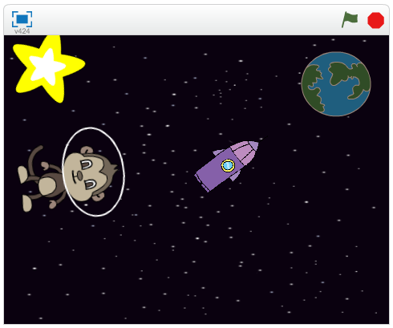
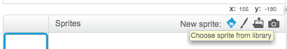
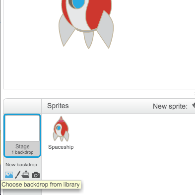
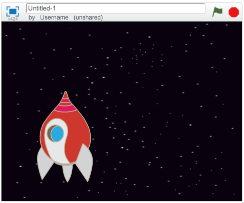
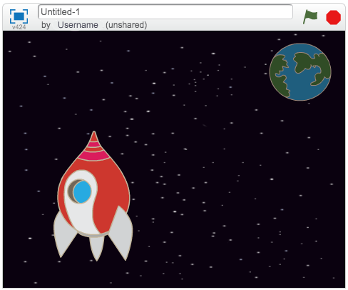
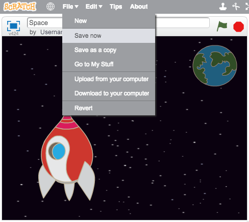
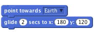
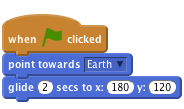
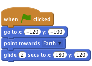
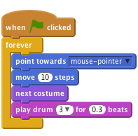

Heads Up!
This project is in Beta. That means we're still testing it, and there's a small chance there could be some bugs or typos. If you're a club leader trying out this project, please complete this short questionnaire (or email ) to let us know how it went!
Introduction
You are going to learn how to program your own animation!

Step 1: Sprites
Activity Checklist
First, make sure that you have opened up the Scratch editor. It should look something like this:

Before you can start animating, you'll need to add in a 'thing' to animate. In Scratch, these 'things' are called sprites. The cat that you can see is a sprite called Felix, who is the Scratch mascot. Let's get rid of him for now, by right-clicking on him, and clicking 'delete'.

Next, click 'Choose sprite from library' to open up a list of all the available Scratch sprites.

Scroll down until you see a spaceship sprite. Click on the spaceship, and click 'OK' to add it to your animation.

You should now have a big spaceship on your 'stage'. The 'stage' is the area on the left, and is where your animation will happen. Think of it as a performance area, just like a real stage! You can drag the spaceship around the stage to move it.
At the moment, the stage is white, and looks pretty boring! Let's add a background to the stage, by clicking on the 'Stage' icon, and then clicking 'Choose background from library'.

Click 'Space' on the left, and then click the 'Stars' backdrop and click 'OK' to add it to the stage.

Your stage should now look like this:

Challenge: Adding another sprite
Can you add another sprite (the Earth) to your stage, so that it looks like this:

Save your project
You should save your work regularly, so that you don't lose it. If you have a Scratch account, you can click 'File' and then 'Save now' to save your project.

Clicking 'Save' adds your program to your 'stuff', which is an online folder that you can access from anywhere. You can access your stuff by clicking 'Go to My Stuff'.
If you don't have a Scratch account, then you can click 'Download to your computer' to save it instead.
Step 2: Animating your sprites
Activity Checklist
Now that you have some sprites, let's add code to animate them!
...

Add in an event

Fix by adding in start position

explain sharing...

Test your project
Click the green flag.
- Does Felix follow the mouse pointer?
- Does it look like he’s walking when he moves?
- Does he move at the right speed?